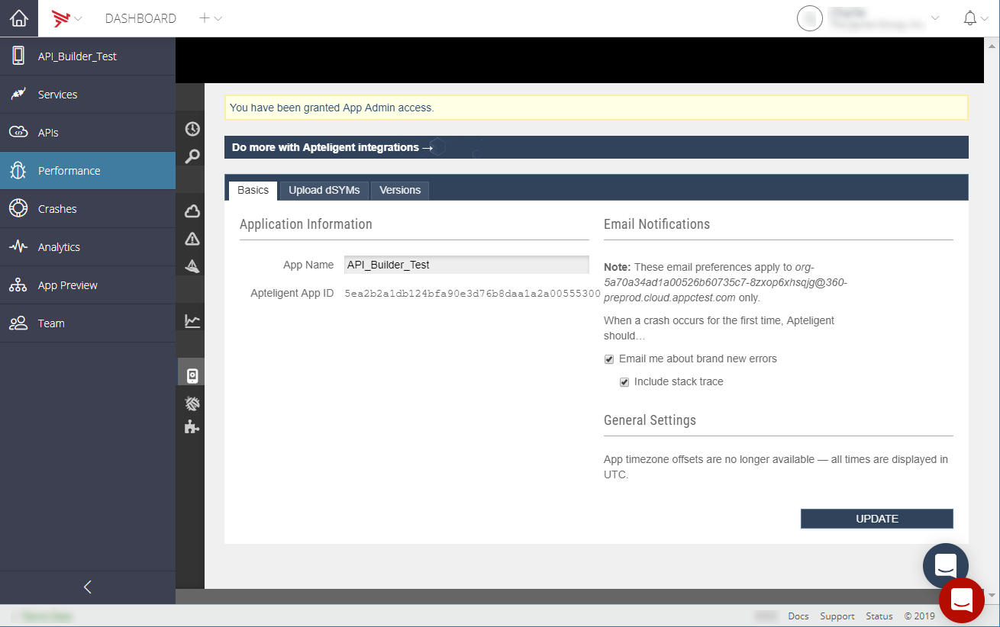

Managing Performance and Crash Data
The Performance tab lets you view details about application crashes and handled exceptions. Each sub-tab is explained below.

Release Console
The Release Console tab displays app loads, crashes, and handled exceptions for the last five minutes in ten-second intervals.
App Users
The App Users tab lets you search for reports by username. To search for a user, enter a username and click Go to bring up a list of users. Click on a username to display a detailed report, which provides the following information:
-
Lifetime application loads, crashes, and handled exceptions
-
Last application load
-
Device information
-
Custom metadata
-
Crashes and handled exceptions within the last 30 day

Network Insights
The Network Insights tab displays information which provides insights into the application network activity,
Crash Reports
The Crash Reports tab displays crash reports within the last month. Click on a crash to display a detailed report, which provides the following information:
-
Stacktrace leading up to the crash
-
Breadcrumbs leading up to the crash
-
Information about the devices that the crash occurred on
-
Users affected by the crash

Handled Exceptions
The Handled Exceptions tab displays handled exceptions within the last month. Click on a handled exception to display a detailed report, which provides the following information:
-
Stacktrace leading up to the thrown exception
-
Breadcrumbs leading up to the thrown exception
-
Information about the devices that the exception occurred on
-
Users affected by the thrown exception
Crash Trends
The Crash Trends tab displays metrics about your application usage and crashes broken down by device, OS version and application version. You can filter the data for up to a 30-day interval.
App Settings
The App Settings tab configures various application settings, such as which versions of your application to monitor and the "Rate My App" alert settings. Your Performance application key is also displayed in this tab.

Bug Tracking
The Bug Tracking tab configures your application to use JIRA. When viewing an error report, you can create a JIRA ticket for that error.
To integrate JIRA with your application, enter your JIRA credentials, JIRA project key to associate with the application and JIRA server URL, then click Save.
When viewing an error report, you will see a Create Issue button, which you can use to create a JIRA ticket for that error. If a ticket was already created, a link to the ticket is provided.
To remove JIRA integration, return to the Bug Tracking tab and click delete in the JIRA section.